<!DOCTYPE html>
<html lang="es">
<head>
  <meta charset="UTF-8">
  <title>Informe del Proyecto - INTEGRADOR II</title>
  <style>
    @page {
      size: A4;
      margin: 2cm;
    }
    body {
      font-family: Arial, sans-serif;
      margin: 0 auto;
      color: #333;
      max-width: 900px;
      font-size: 1rem;
      background: #fff;
    }
    h1 {
      color: #d32f2f;
      text-align: center;
      margin-top: 0.5em;
      font-size: 2.2em;
    }
    h2 {
      color: #009688;
      margin-top: 2em;
      font-size: 1.5em;
      border-bottom: 1px solid #eee;
      padding-bottom: 0.2em;
    }
    .section {
      margin-bottom: 30px;
    }
    .highlight {
      color: #009688;
      font-weight: bold;
    }
    .success {
      color: #388e3c;
      font-weight: bold;
      font-size: 1.1em;
    }
    ul {
      margin-left: 20px;
      margin-bottom: 1em;
    }
    a {
      color: #1976d2;
      word-break: break-all;
    }
    .repo {
      font-size: 0.95em;
      margin-bottom: 1em;
    }
    .img-demo {
      width: 85%;
      max-width: 360px;
      border: 1px solid #ccc;
      margin: 16px auto 16px auto;
      display: block;
      page-break-inside: avoid;
      box-shadow: 0 2px 8px rgba(0,0,0,0.07);
      background: #fafafa;
    }
    code {
      background: #f5f5f5;
      padding: 2px 6px;
      border-radius: 4px;
      font-size: 0.98em;
    }
    .example {
      background: #f9f9f9;
      border-left: 4px solid #009688;
      padding: 10px;
      margin: 10px 0;
      page-break-inside: avoid;
    }
    pre {
      background: #f5f5f5;
      padding: 10px;
      border-radius: 4px;
      font-size: 0.97em;
      overflow-x: auto;
      page-break-inside: avoid;
    }
    table {
      width: 100%;
      border-collapse: collapse;
      margin: 15px 0;
      font-size: 1em;
      page-break-inside: avoid;
    }
    th, td {
      border: 1px solid #bbb;
      padding: 8px 12px;
      text-align: left;
    }
    tr {
      page-break-inside: avoid;
    }
    @media print {
      body {
        background: #fff;
        color: #222;
      }
      h1, h2 {
        color: #222 !important;
      }
      a {
        color: #222 !important;
        text-decoration: underline;
      }
    }
  </style>
</head>
<body>
  <h1>INTEGRADOR II</h1>
  <h2>Semana 15</h2>
  <div class="section">
    <span class="highlight">Documentación de Proyecto:</span>
    <ul>
      <li>Informe del Proyecto (continuar con los artefactos de Scrum)</li>
      <li>Presentación</li>
      <li>Manual de usuario</li>
      <li>Manual técnico</li>
      <li>Resumen Ejecutivo</li>
      <li>Manual de operaciones</li>
      <li>Acta de cierre</li>
      <li>Control de versiones</li>
    </ul>
    <p class="success">Funcionalidad del código 100%</p>
  </div>

  <section>
    <h2>Web: Aplicativo Frontend</h2>
    <p>
      La plataforma web permite a los usuarios gestionar productos, compras y pagos de manera intuitiva y segura. Se desarrolló con Angular y se conecta a los microservicios mediante API REST. El frontend está desplegado en Render y cuenta con validaciones, protección CORS y una interfaz amigable.
    </p>
    <p class="repo">
      Repositorio: <a href="https://github.com/pahc30/front-farmacia/tree/main/farmacia-dey" target="_blank">front-farmacia/farmacia-dey</a>
    </p>
    <h3>Ejemplo de uso</h3>
    <div class="example">
      <strong>Registro y compra:</strong><br>
      1. El usuario ingresa sus datos y se registra.<br>
      2. Inicia sesión y navega por el catálogo de productos.<br>
      3. Selecciona productos, los agrega al carrito y realiza el pago.<br>
      4. Recibe confirmación de la compra.<br>
    </div>
this.http.get<Producto[]>(
  'https://api.farmaciadey.onrender.com/api/productos', {
    headers: { Authorization: `Bearer ${token}` }
  }
).subscribe(productos => {
  this.productos = productos;
});
    </pre>
  </section>
     <h3>Manual de usuario Android con capturas</h3>
     <div class="example">
      <strong>1. Login</strong><br>
      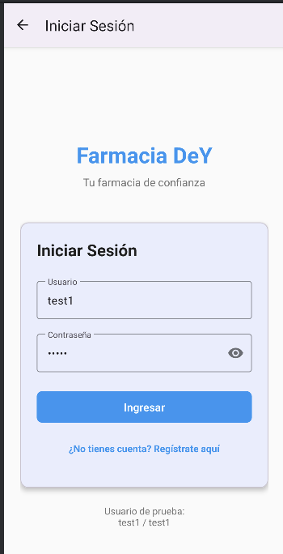<br>
      <strong>2. Perfil de usuario</strong><br>
      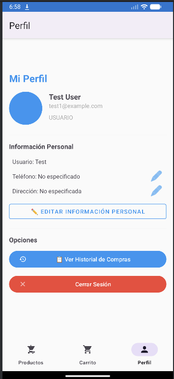<br>
      <strong>3. Catálogo de productos</strong><br>
      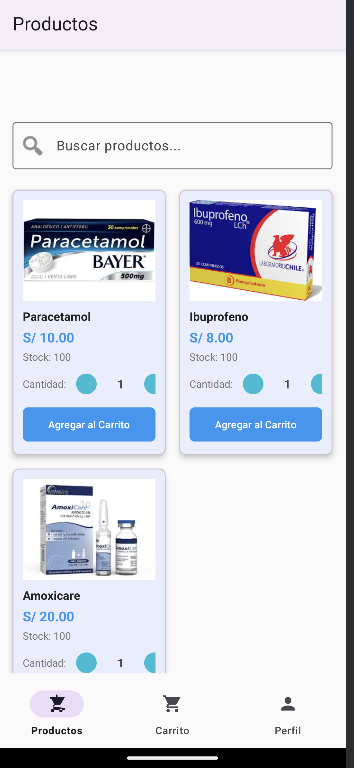<br>
      <strong>4. Agregar al carrito</strong><br>
      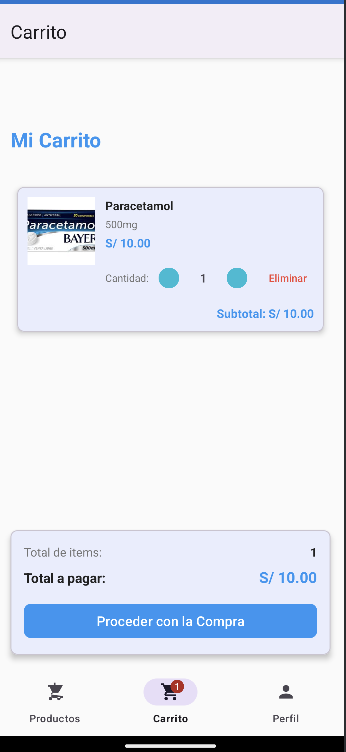<br>
      <strong>5. Selección de método de pago</strong><br>
      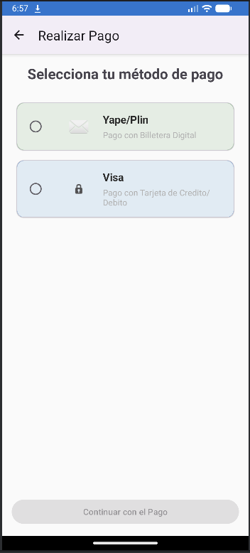<br>
     </div>
     <h3>Ejemplo de llamada desde la app Android (Kotlin)</h3>
     <pre>

  <section>
    <h2>Aplicativo Android</h2>
    <p>
      Se desarrolló una app móvil para Android que permite a los usuarios consultar productos, realizar compras y gestionar su cuenta desde el celular. La app se conecta a los mismos microservicios y fue probada en emulador, garantizando la funcionalidad y experiencia de usuario.
    </p>
    <p class="repo">
      Repositorio: <a href="https://github.com/pahc30/farmacia-android" target="_blank">farmacia-android</a>
    </p>
    <h3>Ejemplo de uso</h3>
    <div class="example">
      <strong>Compra desde el móvil:</strong><br>
      1. El usuario abre la app y se autentica.<br>
      2. Busca productos y los añade al carrito.<br>
      3. Elige método de pago y confirma la compra.<br>
      4. Visualiza el historial de compras en la app.<br>
    </div>
    <h3>Ejemplo de llamada desde la app Android (Kotlin)</h3>
    <pre>
val client = OkHttpClient()
val request = Request.Builder()
    .url("https://api.farmaciadey.onrender.com/api/productos")
    .addHeader("Authorization", "Bearer $token")
    .build()
client.newCall(request).enqueue(object : Callback {
    // ...manejo de respuesta...
})
    </pre>
  </section>

  <section>
    <h2>Backend: Microservicios</h2>
    <p>
      El backend está compuesto por seis microservicios en Java 21 y Spring Boot, desplegados en Render y Docker. Incluye autenticación, gestión de usuarios, productos, compras, métodos de pago y un gateway para centralizar las peticiones.
    </p>
    <p class="repo">
      Repositorio: <a href="https://github.com/pahc30/services-farmacia" target="_blank">services-farmacia</a>
    </p>
    <h3>Detalles técnicos</h3>
    <ul>
      <li>Java 21, Spring Boot, Maven</li>
      <li>Base de datos PostgreSQL 16</li>
      <li>Despliegue en Render y Docker Compose</li>
      <li>Comunicación por API REST (JSON)</li>
      <li>Seguridad: JWT, CORS, headers de seguridad, protección contra inyección SQL</li>
    </ul>
    <h3>Ejemplo de endpoint seguro (Spring Boot)</h3>
    <pre>
@GetMapping("/api/productos")
@PreAuthorize("hasRole('USER')")
public ResponseEntity<List<Producto>> getProductos() {
    List<Producto> productos = productoService.findAll();
    return ResponseEntity.ok(productos);
}
    </pre>
    <h3>Ejemplo de consulta SQL segura</h3>
    <pre>
@Query("SELECT u FROM Usuario u WHERE u.email = :email")
Usuario findByEmail(@Param("email") String email);
    </pre>
  </section>

  <section>
    <h2>Manual de Usuario</h2>
      <p>
        El usuario puede acceder a la web o app móvil para:
        <ul>
          <li>Registrarse y autenticarse</li>
          <li>Buscar productos por categoría</li>
          <li>Agregar productos al carrito</li>
          <li>Seleccionar método de pago y realizar compras</li>
          <li>Consultar historial de compras y gestionar su cuenta</li>
        </ul>
        La interfaz es sencilla y segura, con soporte para dudas y problemas.
      </p>
      <h3>Flujo de usuario con capturas</h3>
      <div class="example">
        <strong>1. Login</strong><br>
        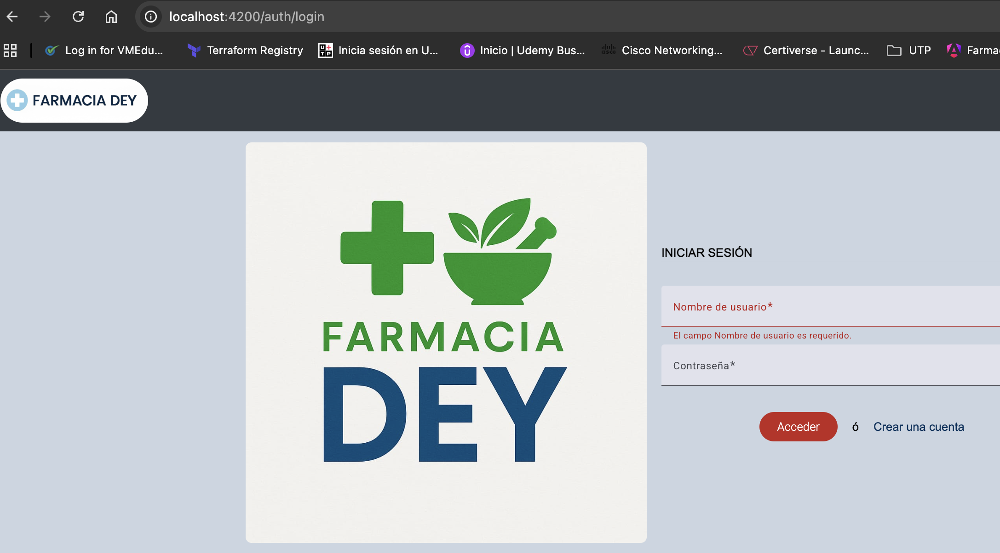<br>
        <strong>2. Dashboard principal</strong><br>
        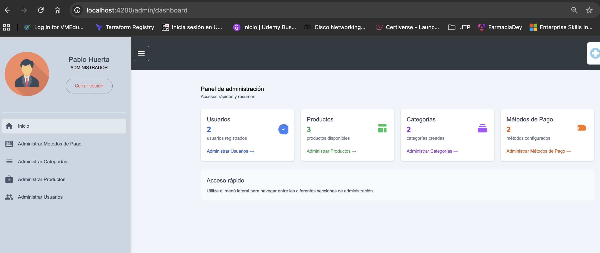<br>
        <strong>3. Gestión de usuarios</strong><br>
        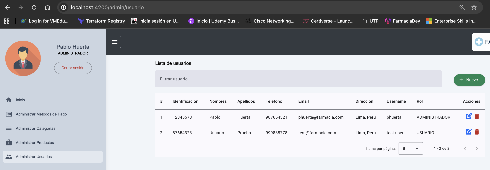<br>
        <strong>4. Catálogo de productos</strong><br>
        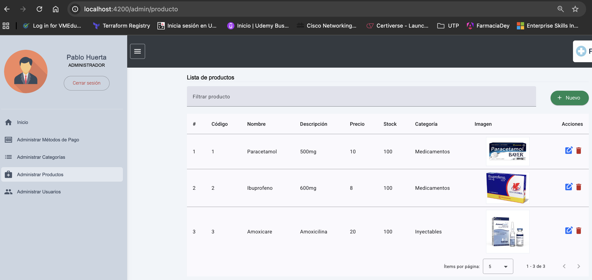<br>
        <strong>5. Filtrar por categoría</strong><br>
        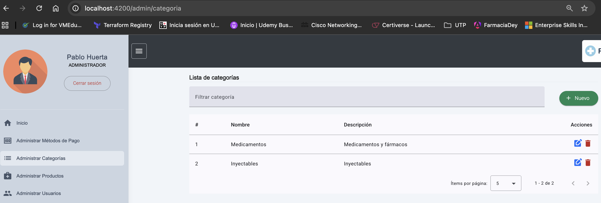<br>
        <strong>6. Agregar al carrito</strong><br>
        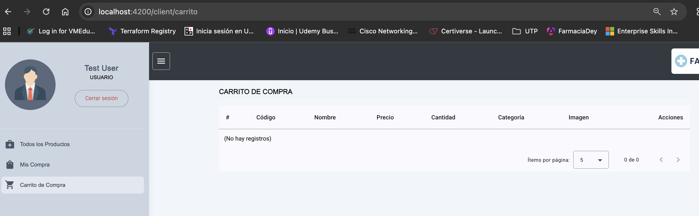<br>
        <strong>7. Selección de método de pago</strong><br>
        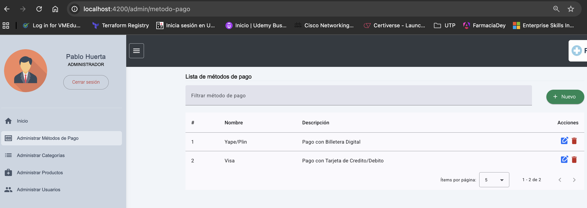<br>
        <strong>8. Confirmación y compras realizadas</strong><br>
        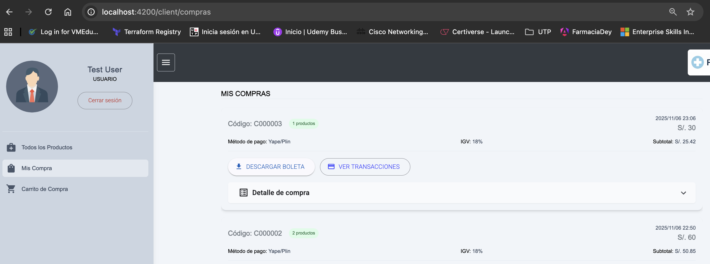
      </div>
  </section>

  <section>
    <h2>Manual Técnico</h2>
      <p>
        <strong>Arquitectura:</strong> El sistema está compuesto por seis microservicios independientes desarrollados en Java 21 y Spring Boot, cada uno con su propio propósito (autenticación, usuarios, productos, compras, métodos de pago y gateway).
        <br><br>
        <strong>Base de datos:</strong> Se utiliza PostgreSQL 16, con esquemas separados para cada microservicio, lo que facilita la escalabilidad y el mantenimiento.
        <br><br>
        <strong>Despliegue:</strong> Los servicios se despliegan en Render usando Docker, permitiendo integración continua y despliegue automatizado. El entorno de desarrollo utiliza Docker Compose para pruebas locales.
        <br><br>
        <strong>Frontend:</strong> La web está desarrollada en Angular y el aplicativo móvil en Android Studio (Kotlin), ambos consumen los microservicios mediante API REST.
        <br><br>
        <strong>Seguridad:</strong> Se implementa JWT para autenticación, CORS para control de acceso, headers de seguridad en el gateway y consultas SQL preparadas para evitar inyección. Se realizaron pruebas de seguridad y validación de headers.
        <br><br>
        <strong>Integración y pruebas:</strong> Se realizaron pruebas unitarias, de integración y de usuario en todos los módulos. El sistema fue validado en emuladores y navegadores reales.
        <br><br>
        <strong>Monitoreo y logs:</strong> Render provee paneles de monitoreo y logs en tiempo real. Docker permite revisar el estado de los contenedores en desarrollo.
      </p>
      <h3>Configuración de seguridad</h3>
      <ul>
        <li>CORS configurado para permitir solo el frontend autorizado</li>
        <li>Headers de seguridad en el gateway:
          <ul>
            <li>X-Content-Type-Options: nosniff</li>
            <li>X-Frame-Options: DENY</li>
            <li>X-XSS-Protection: 1; mode=block</li>
            <li>Content-Security-Policy: default-src 'self'; ...</li>
          </ul>
        </li>
        <li>Consultas SQL preparadas para evitar inyección</li>
        <li>Autenticación y autorización con JWT</li>
        <li>Validación de entradas y sanitización de datos</li>
        <li>Pruebas de seguridad automatizadas y manuales</li>
      </ul>
      <h3>Captura de headers (ejemplo)</h3>
      <div class="example">
        <pre>
  HTTP/1.1 200 OK
  X-Content-Type-Options: nosniff
  X-Frame-Options: DENY
  X-XSS-Protection: 1; mode=block
  Content-Security-Policy: default-src 'self'; ...
        </pre>
      </div>
  </section>

  <section>
    <h2>Resumen Ejecutivo</h2>
    <p>
      El proyecto digitaliza la gestión de farmacia, integrando web, móvil y backend seguro. Se aplicaron buenas prácticas de desarrollo y seguridad, logrando una solución escalable y funcional.
    </p>
  </section>

  <section>
    <h2>Manual de Operaciones</h2>
    <ul>
      <li>Inicio: Ejecutar <code>docker-compose up</code> o desplegar en Render.</li>
      <li>Monitoreo: Revisar logs y estado de los servicios en Render.</li>
      <li>Actualización: Hacer pull de la última versión y redeplegar.</li>
    </ul>
      <h3>Capturas de Render y Docker</h3>
        <div style="text-align:center;">
          <div style="margin-bottom:18px;">
            <strong>Servicios desplegados en Render</strong><br>
            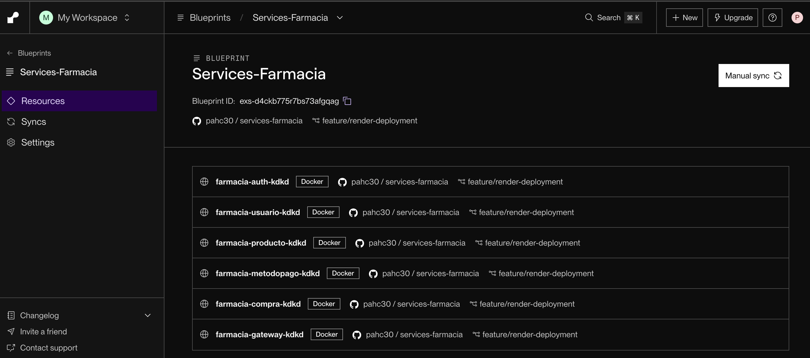
          </div>
          <div style="margin-bottom:18px;">
            <strong>Panel Render</strong><br>
            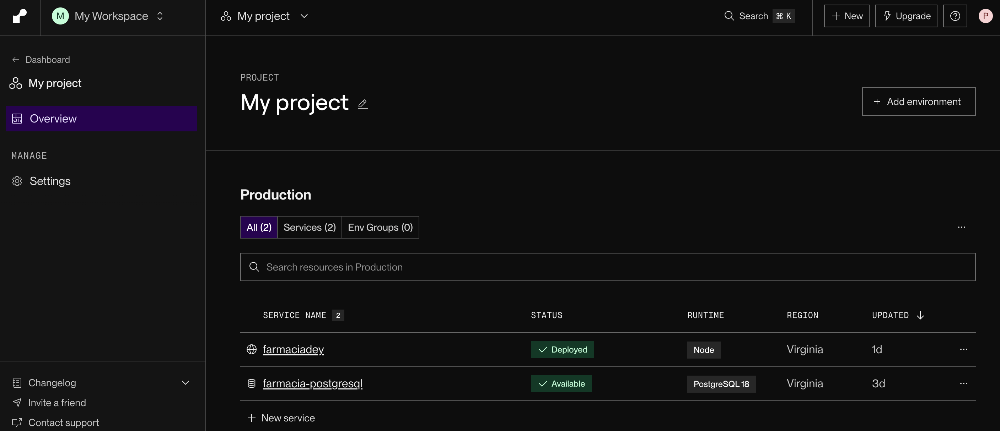
          </div>
          <div style="margin-bottom:18px;">
            <strong>Consola Docker en desarrollo</strong><br>
            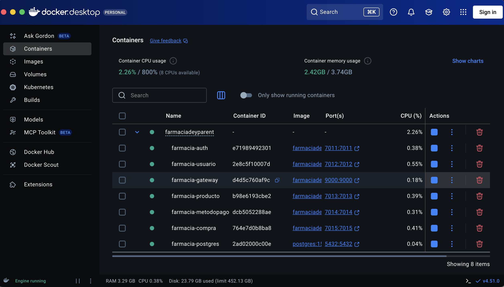
          </div>
        </div>
  </section>

  <section>
    <h2>Acta de Cierre</h2>
      <table border="1" cellpadding="8" style="border-collapse:collapse; width:100%; margin-top:10px;">
        <tr style="background:#f5f5f5; font-weight:bold;">
          <td>Proyecto</td>
          <td>Farmacia Dey</td>
        </tr>
        <tr>
          <td>Fecha de cierre</td>
          <td>17 de noviembre de 2025</td>
        </tr>
        <tr>
          <td>Equipo</td>
          <td>Pablo Huerta y colaboradores</td>
        </tr>
        <tr>
          <td>Objetivo cumplido</td>
          <td>Digitalización y gestión integral de farmacia con microservicios, web y móvil.</td>
        </tr>
        <tr>
          <td>Entregables</td>
          <td>Manual de usuario, manual técnico, documentación, código fuente, presentación.</td>
        </tr>
        <tr>
          <td>Observaciones</td>
          <td>El proyecto cumple con los requisitos funcionales y técnicos. Se recomienda continuar con el mantenimiento y mejoras futuras.</td>
        </tr>
        <tr>
          <td>Firma</td>
          <td>__________________________</td>
        </tr>
      </table>
  </section>

  <section>
    <h2>Control de Versiones</h2>
    <ul>
      <li>GitHub para control de versiones.</li>
      <li>Ramas principales: <code>main</code>, <code>feature/render-deployment</code></li>
      <li>Commits documentados y con mensajes claros.</li>
    </ul>
      <h3>Captura de historial GitHub</h3>
      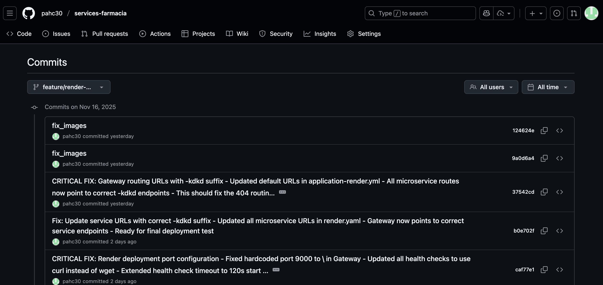
  </section>

  <section>
    <h2>Funcionalidad del código 100%</h2>
    <p>
      Todas las funcionalidades requeridas están implementadas y probadas en web, móvil y backend. El sistema responde correctamente y se realizaron pruebas de seguridad y rendimiento.
    </p>
    <h3>Pruebas realizadas</h3>
    <ul>
      <li>Pruebas de integración entre frontend, backend y móvil</li>
      <li>Pruebas de seguridad: CORS, headers, inyección SQL</li>
      <li>Pruebas de usuario: registro, compra, historial</li>
    </ul>
  </section>
</body>
</html>
